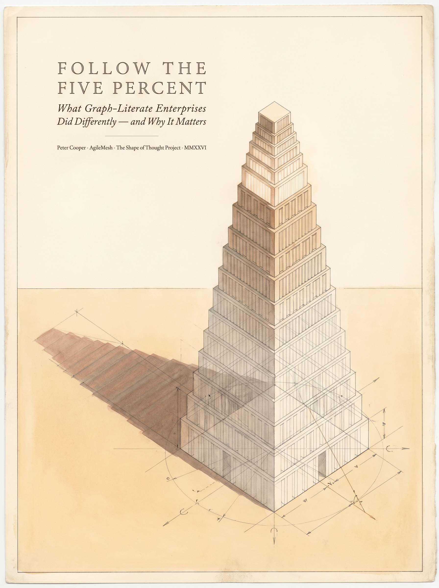
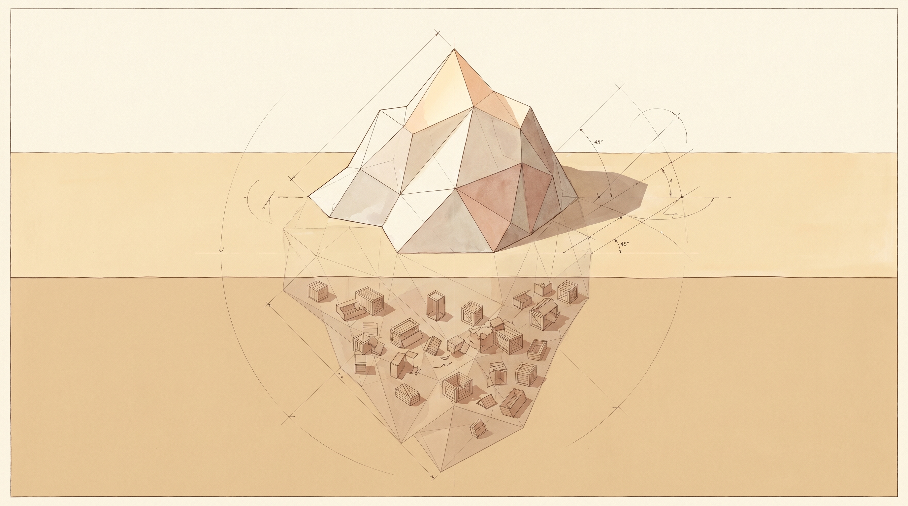
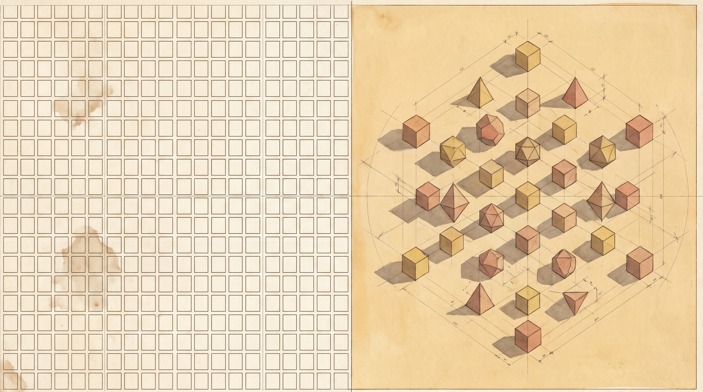
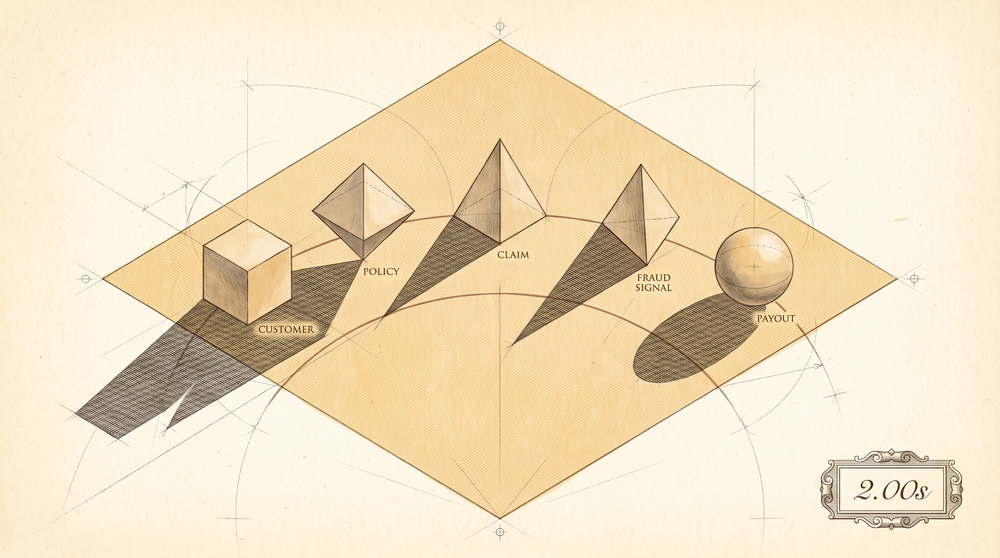
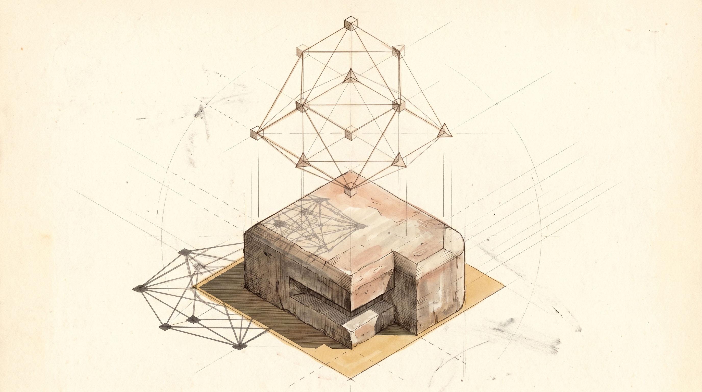

The era of the GBP 330 million band-aid is over.
For decades, the Great SQL Monoculture has kept our enterprise data tied up like obstinate goats in a paddock, facing different directions and resolutely refusing to mingle. And for decades, the insurance industry and the NHS have paid a staggering premium to external consultants just to tell us what those isolated goats are thinking.

But the 5% of companies that are actually succeeding with AI - the Lemonades, the Roots, the forward-thinking institutions - have cracked the code. They are not buying better algorithms or more expensive black boxes. They are building better environments. They are tearing down the fences, unclipping the carabiners, and letting their data connect in rich, semantic graphs.
Most importantly, they are handing the keys back to their own people.

Artificial intelligence is not a software subscription you can rent from an external vendor; it is a structural capability you must cultivate from within. When you teach your underwriters, your clinicians, and your claims handlers the true shape of the data, the magic returns in-house. You no longer need to outsource your corporate memory. The AI becomes explainable, the Duty of Care becomes a natural byproduct of your architecture, and the multi-million-pound consulting dependency simply evaporates.

The 5% will connect their data, empower their staff, and own their intelligence.
The 5% are not smarter. They are not better funded. They simply noticed, at some point, that the world is made of relationships, and built their systems to remember that. The other 95% are still extracting it into rows, one cell at a time, and wondering why the model cannot tell them anything they did not already know.

Follow the Five Percent.
A 16-minute audio companion. The goat metaphor, the GBP 330 million NHS contract, why your data warehouse is a paddock full of obstinate goats facing different directions - and what happens when you finally unclip them.
Listen on YouTube →